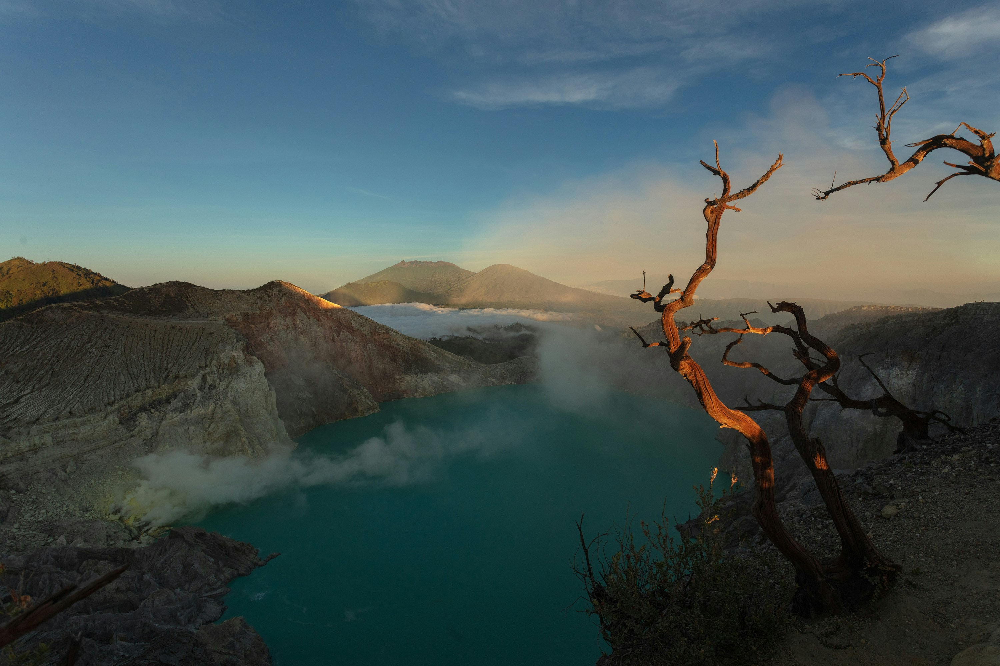

Kawah Ijen
Mountain
Kawah Ijen is a volcanic crater in Banyuwangi, famous for its turquoise acidic lake and the rare blue fire phenomenon that appears at night. The dramatic landscape makes it one of the most iconic adventure destinations in East Java.
Fun Fact: Kawah Ijen is home to traditional sulfur miners who carry loads of 70–90 kg of sulfur down steep paths, showing incredible strength and endurance.